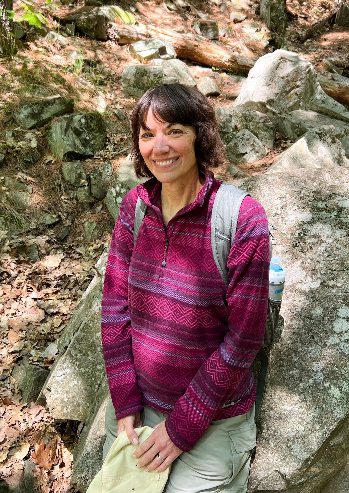

Jeanne was born on March 22nd, 1962, at the age of zero, in Mount Carmel Hospital in Detroit, Michigan.
She grew up in Troy, Michigan. Her mom was an oil painter, and they were very crafty as a family. At the
age of 12, she made her first oil painting, and in high school, she took an art class, finished a
drawing, and thought, “I’m actually good at this.” but that was the end of her art story for a while.
At 18, she worked and went to school at GM, and on June 1st, 1987, she received her Master of Science in
Management from MIT. She worked at GM for 30 years and zero minutes, though it took 34 years to
accomplish since school at GMI and MIT didn’t count. After work, she started taking adult art classes to
get back into painting and has kept with it for years.
Her paintings draw you in; they are genuine and fun. After creating a painting of a family member’s dog,
she started focusing on pet paintings. The joy on their face was palpable. Since then, she has created
roughly 25 pet paintings.
She married on October 13th, 2001 to Brennen Waugh.
In retirement, she wants to keep having fun, being creative, and learning more even at the age of ...
the number is irrelevant. She's proud of her education and career and proud that she supported herself
till she was 39 and a half and bought her first house when she was 27.
Some fun bits about her painting:
- She uses every drop. It's too expensive to waste.
- She uses an overhead projector to get the outlines and proportions from real photos to get the pets precisely right.
- When showing her mom her paintings, she often says, "Is it done?"